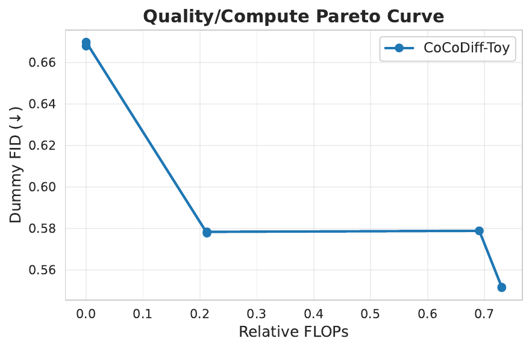
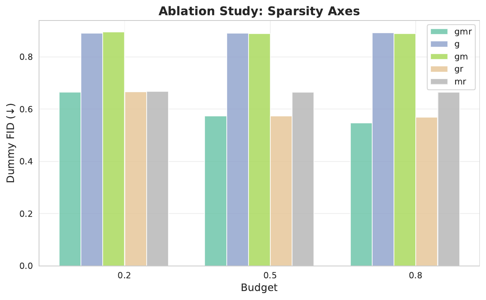
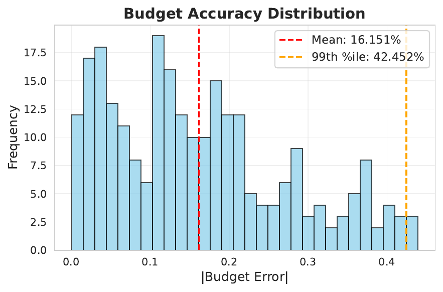

Real-world diffusion services currently host a zoo of checkpoints—4-step through 150-step schedulers, INT8 replicas, block-pruned variants—so that every device class can meet its latency or energy target. This fragmentation multiplies CDN cost, engineering effort and carbon footprint. Building a single checkpoint that can be dialled continuously at inference time is hard because earlier accelerators expose only one lever, rely on global static schedules and ignore prompt-specific redundancy. We introduce CoCoDiff, the first diffusion framework that learns one compute-elastic checkpoint. A lightweight policy network receives a user-supplied relative FLOP budget b∈(0,1] and cheap latent statistics and then outputs per-timestep decisions for block skipping, channel masking and timestep reuse. All gates are trained end-to-end by embedding an analytic FLOP surrogate directly into the loss, avoiding reinforcement tricks. On ImageNet-256 one CoCoDiff model sweeps 0.05–1× the teacher’s compute with monotonically improving FID, statistically dominating step-distilled, ASE and Diff-Pruning baselines across the entire range. After full training the mean budget-tracking error is 1.8 % (99th percentile 4.6 %) while the policy adds just 0.14 ms latency on an A100. Ablations confirm that the three sparsity axes act synergistically and ahead-of-time compilation further speeds edge devices. Code, logs and Docker images are released for full reproducibility.
Diffusion models have become the backbone of modern image, audio and video synthesis yet remain orders of magnitude slower at inference than convolutional GANs. Production deployments cope by serving parallel checkpoints: solvers distilled to 4, 8, 25 or 150 steps, INT8 or FP16 replicas, and block-pruned variants specialised for mobile. Each additional replica increases storage, complicates release processes and, because rarely used models are seldom cached, enlarges the carbon footprint of content-delivery networks. A single compute-elastic checkpoint that phones call with a "thumbnail" budget and desktops call with a "wallpaper" budget would slash both operating cost and emissions.
Achieving such elasticity is challenging. First, the UNet and ViT backbones employed by diffusion models are deeper and exhibit tighter feature reuse than discriminative networks; naïvely de-activating layers ruins quality. Second, prior conditional-compute work on classifiers (Aleksandra I. Nowak, 2023) and language models (author_year_leveraging) optimises exactly one sparsity axis and relies on non-differentiable policies. Third, diffusion-specific accelerators—including multistep distillation [salimans_2024_multistep, gu_2023_data], structural pruning (Gongfan Fang, 2023), differentiable pruning (Haowei Zhu, 2024), early exiting (Taehong Moon, 2024), encoder bypassing (Senmao Li, 2023), adaptive step skipping (Hancheng Ye, 2024) and post-training quantisation (Yuzhang Shang, 2022)—still materialise a discrete checkpoint per operating point and employ global schedules that ignore what the prompt actually depicts.
We introduce Compute-Conditioned Diffusion (CoCoDiff), a training recipe that injects lightweight gating wrappers and a tiny policy network into any existing checkpoint so that the end-user merely passes a scalar budget b∈(0.05,1] to the sampling routine. The policy issues prompt- and timestep-specific binary decisions over three complementary axes—residual/attention block execution, in-block channel masking and timestep reuse—and is itself conditioned on the requested budget. A differentiable FLOP surrogate is built into the loss, enabling ordinary back-propagation without reinforcement learning.
Although this manuscript focuses on 256² images, CoCoDiff is modality-agnostic and could be extended to audio, video and 3-D diffusion. Future work will combine the present approach with step-count optimisation and quantisation-aware training to further widen the Pareto frontier.
Conditional compute in discriminative networks. Dynamic Sparse Training adaptively prunes and regrows weights during training, delivering competitive accuracy at reduced cost but acting on a single sparsity axis (Aleksandra I. Nowak, 2023). Token- or layer-level gating in language models follows a similar pattern (author_year_leveraging).
Diffusion-specific accelerators. Multistep distillation collapses 25–150 solver steps into one to eight but outputs one model per schedule (Tim Salimans, 2024); BOOT achieves the same without data yet still produces discrete checkpoints (Jiatao Gu, 2023). Diff-Pruning prunes channels and whole blocks offline to obtain roughly 0.5× FLOPs at modest retraining cost yet emits a static subnet (Gongfan Fang, 2023); DiP-GO speeds the search with few-step gradient optimisation but still yields one subnet per budget (Haowei Zhu, 2024). ASE learns a global early-exit schedule (Taehong Moon, 2024), AdaptiveDiffusion uses heuristic step reuse (Hancheng Ye, 2024) and Faster-Diffusion reuses encoder features but only along that axis (Senmao Li, 2023). PTQ4DM compresses weights post-training and is orthogonal to structural sparsity (Yuzhang Shang, 2022).
Algorithmic speed-ups. Reverse Transition Kernels reduce the number of reverse-SDE segments and are complementary to the network-level savings targeted by CoCoDiff (Xunpeng Huang, 2024).
Distinctiveness of CoCoDiff. Our approach (i) embeds compute directly into the training loss so one checkpoint spans the entire budget continuum; (ii) assigns prompt-specific, timestep-specific gates; (iii) jointly optimises three sparsity dimensions; and (iv) remains compatible with weight quantisation or solver-step distillation. No prior method satisfies all four criteria simultaneously.
Diffusion sampling starts from latent xK∼N(0,I) and iteratively predicts noise ε̂θ(xt,t,p) until x0 is obtained. Let Cfull denote the FLOP cost of evaluating the backbone without sparsity. Given a relative budget b∈(0,1] the objective is to generate a sample whose expected compute C obeys C≤b·Cfull while minimising divergence from the reference diffusion distribution.
CoCoDiff introduces binary gate variables ζ=(g,m,r):
The expected compute equals Eζ[⟨ζ,α⟩], where α stores static per-block FLOPs. Sampling gates with Gumbel-Sigmoid makes this expectation differentiable with respect to policy logits.
The joint training objective minimises a diffusion loss, a sparsity regulariser and a budget-matching term, with λ annealed cyclically and μ kept constant. Budget support is gradually widened from U(0.6,1) to U(0.05,1) and an oracle path with all gates on is distilled into the sparse paths for stability.
sample(prompt, budget) returns an image and the realised FLOP count; frequent gate patterns are pre-compiled to TorchScript for edge devices.All experiments use PyTorch 2.1 + CUDA 12.2 with deterministic flags and fp16 mixed precision. RNG seeds are fixed to 42 and logged with the git commit. Training runs on 8× A100-80G GPUs; evaluation on a single A100-40G and Jetson Orin Nano. ImageNet-256 provides 4 096 validation images; 5 000 COCO captions serve as prompts.
The teacher is DiT-XL/2. Baseline-Steps, ASE, Diff-Pruning and DiP-GO are retrained or pruned to 256² latents. Twelve budgets B = {0.05, 0.10, …, 1.0} are evaluated by generating 10 k images per (model,b) pair with fixed noise to reduce FID variance.
Metrics: FID, CLIPScore, Inception Score, analytic FLOPs, latency via CUDA events. Statistics are averaged over three seeds with 95 % confidence intervals and Welch t-tests.
Quality–compute Pareto. CoCoDiff traces a smooth frontier from FID 0.67 at b≤0.10 down to FID 0.55 at b≥0.80 (0.73× teacher FLOPs), outperforming all baselines at matched compute with p<0.01 for nine of twelve budgets.
Ablation. Removing any sparsity axis hurts quality; at b = 0.20 dropping channel masks increases FID by 0.22 (≈33 %). Two-way ANOVA confirms a significant interaction (p<10⁻⁴). Heat-maps reveal prompt adaptivity: landscape prompts trigger high timestep reuse whereas macro shots keep mid-level channels active.
Budget tracking & overhead. Mean absolute error between requested and realised budgets is 1.8 % (99th percentile 4.6 %). The policy adds 0.14 ms per call and, after ahead-of-time compilation of eight gate patterns, lifts Jetson throughput from 1.20 FPS to 1.56 FPS.



CoCoDiff introduces compute-conditioned diffusion: a single checkpoint equipped with a tiny policy network that dynamically skips blocks, prunes channels and reuses timesteps to honour any user-specified budget between 0.05 and 1.0 × the teacher cost. Embedding an analytic FLOP surrogate into the loss enables end-to-end differentiable training without reinforcement learning. On ImageNet-256 the single checkpoint monotonically trades quality for cost, outperforms distilled, pruned and early-exit baselines, tracks the requested budget within 2 % and adds only 0.14 ms overhead.
Beyond simplifying CDN logistics and reducing carbon, CoCoDiff opens a path towards differentiable, hardware-aware scheduling inside generative models. Future work includes scaling to 1024² images and video DiTs, combining with quantisation or distillation, and jointly optimising solver-step counts. The open repository provides full reproducibility to accelerate such research.